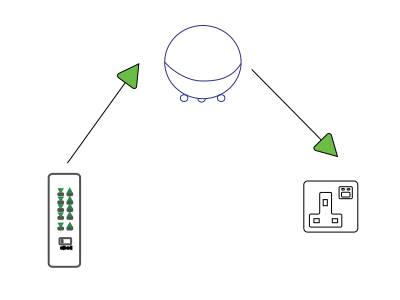
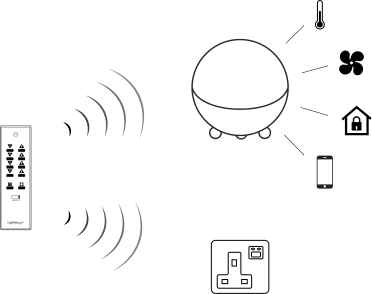

This LightwaveRF app has been designed to act as a hub between your LightwaveRF transmitters (remotes, wireless switches, door bells etc) and your LightwaveRF recievers (wired lights, wired plug sockets, etc) as most of LightwaveRF devices are one way i.e Transmit to reciever without anyfeed back the app will not know know if a user manuallly turns off a lightswitch for example.
Homey will use 1 of 6 avaliable pairing memories of reciever, it is possible to pair a device more than once and if you find you have used up all of the pairing memories please read the documentation of your device on how to reset the memory. In general to remove homey from the devices memory, 1) turn the device on with homey, 2)put the device into pairing mode, 3) turn the device off with Homey. The amber light should now flash indicating Homey has been removed. It is now safe to delete the device from Homey.
To clear a devices history of all devices 1) put the device into pairing mode 2) press and hold the off button until it flashes again 3) press off button one more time. The device should not remove all paired devices from its history
With devices with more than one set of switching, such as the 2 gang dimmer both switches need to be paired individually.
Mode 1: A remote and switch can be paired directly with homey so that all comunication is done by Homey

Mode 2: A remote can be paired directly to a switch and also with homey, then on a switch press homey can do other things as well.
